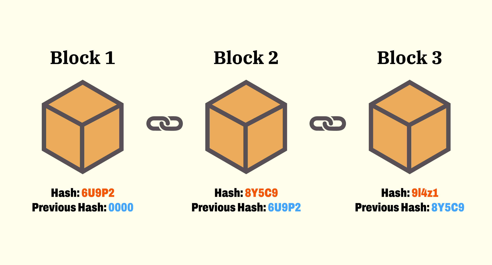

What is a Blockchain?
October 2,2022 by Shanice Jones
A block chain is chain of block which contain information. This technique was orginated in 1991 from a group of researchers. It was originally intended to time stamp original documents so that its not possible to tamper with them. This technique was not quite popular until it was adopted by Satoshi Nakamoto to create the digital currency bitcoin. Dispite what one might think knowing of bitcoin, blockchain is a distributed ledger that is open to anyone. So yes, it is accessible, however, the information in the blockchain cannot be changed. Now you might be wondering how tghis is possible.
When taking a closer look at a block, each block has data, a hash and hash of the previous block. In the case of bitcoin the data would be the details of a transaction. As for the hash this is like a unique identifier for a block and can be thought of like fingerprint. Once a block is created its hash is being created and making changes to the block will cause changes to the hash. Then the third element of the block chain is the hash of the previous block this is what forms the chain and makes the blockchain secure. For example, block 3 has the hash of block 2 and block 2 has the hash of block 1. If someone were to tamper with block 2 the hash of block 2 would change and this would affect the rest of the blockchain because block 3 and all following block would have the wrong previous hash making the chain invalid.